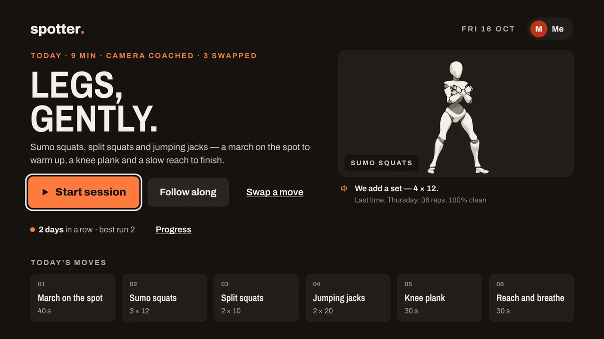
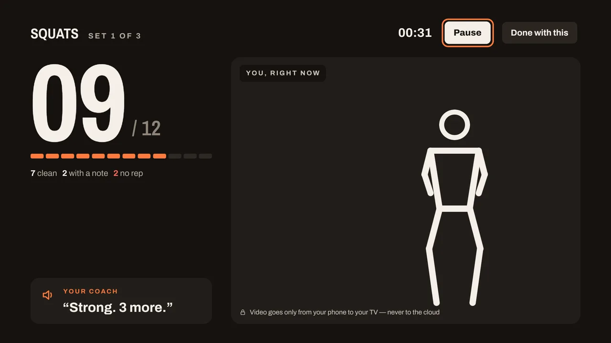
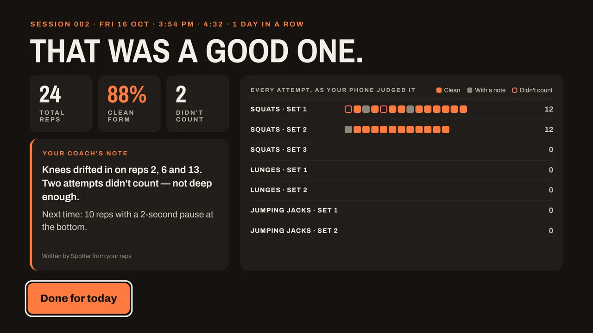
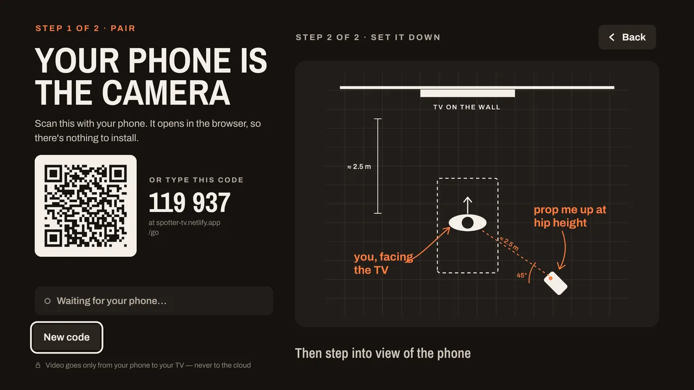
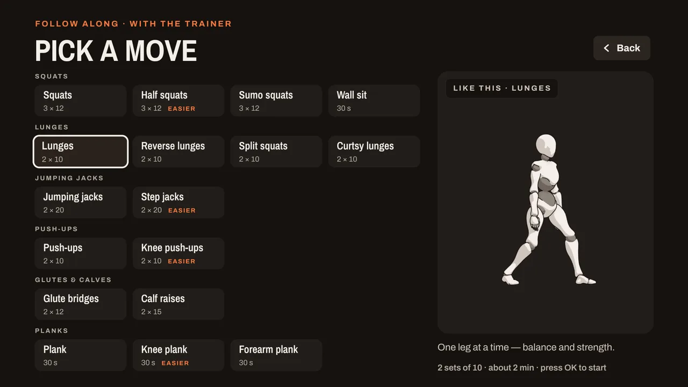

A workout app for Amazon Fire TV
Work out at home. Your TV checks every rep.
Spotter is a fitness coach on your Fire TV. Prop up your phone and its camera watches you: the TV counts each squat, lunge and jumping jack, tells you how to fix your form, and never counts a rep that doesn't count.
- A Fire TV stick or TV
- Your phone as the camera — nothing to install
- About 2 metres of floor
Video goes only from your phone to your TV — never to the cloud

Two ways to train
Follow along, or be coached
Follow along
A 3D trainer shows every move on the TV and a voice guides you through it, on a steady beat.
- Pick any move: squats, lunges, push-ups, bridges, planks and more
- A gentler version of most moves, marked "easier"
- Streaks and progress for everyone in the house
Coach me on camera
Pick one of twelve moves the camera checks. Your phone watches your form and the TV shows you, live, with your skeleton drawn on top. It starts by itself as soon as your phone can see you.
- Every rep judged: clean, counted with a note, or not counted — and why
- The TV speaks the count and the fix: "push your knees out" — your phone just watches
- A receipt at the end with every attempt, set by set


How it works
Three steps, nothing to install on your phone
Start on the TV
Open Spotter on your Fire TV, press Start, choose Coach me on camera and pick a move.
Scan the code
Scan the QR code with your phone, or open spotter-tv.netlify.app/go and type the code shown on the TV. The camera page opens in your phone's browser.
Set it down and train
Prop the phone up and step back until the TV can see you. It counts down from 5 and starts. When you're done, pick another move; the phone stays linked.


Set up your phone
Where to put the phone
- Put the phone on the floor or a low shelf, propped up at about hip height.
- Stand about 2.5 metres (8 feet) away, so your whole body, head to feet, is in view.
- Turn the phone about 45° to you. Straight from the side, one leg hides the other.
- Keep the phone and the TV on the same Wi-Fi. That's how your picture reaches the TV. On other networks reps are still counted, and the TV shows an outline instead.
- Train in good light, in clothes that show the shape of your knees and hips.
- Use an up-to-date browser (Chrome on Android, Safari on iPhone) and allow the camera when asked.
Private by design
Your picture stays at home
On your phone
Body tracking runs in your phone's browser. Your phone sends the TV your rep counts and the positions of a few body points.
Phone to TV
The live picture goes straight from your phone to your TV over your home Wi-Fi. It is never sent to or stored on our servers.
On your TV
Profiles and history are kept on the TV. No account, no sign-in. Read the privacy policy.
Built with
Fire TV, AWS and open source
Built for the Amazon Developer Hackathon 2026. The rep counting and form checks are an open-source library, spotter-movement.